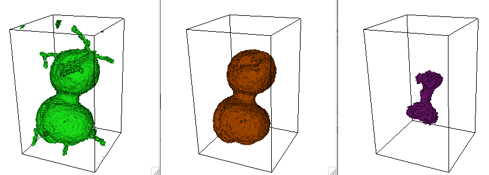

This page discusses possible improvements that we might make to the CC3D visualizations. This first experiment was doing some post-processing on .pif output files from a tumor growth/vascularization simulation (Abbas). The basic approach taken was:
We first begin with exploring how we might smooth the isosurfaces generated by VTK. Consider a single frame/dataset from the second movie:
BUG ALERT: I naively used vtkContourFilter to generate the isosurfaces shown here, but later discovered that in fact the FroVasc surface should *only* contain the blood vessel-like structures and not the surface that looks like the tumor. Ben pointed out that I should have used the vtkDiscreteMarchingCubes filter. THANKS Ben!

Using the isosurface (below, left) for the "Necrotic" cell types (buried in the interior), zoom in, and experiment with VTK's smoothing filter:
Comparing smoothing from below.
Comparing smoothing on the FroVasc isosurface (100,300,and 800 smoothing iterations; sorry, I changed color from the green above)
Looking at the center XZ slice and a zoomed region. Notice how cell type #1 (FroVasc, yellow) forms a thin boundary around cell type #2 (Malignant, greenish).
T15003250 (last dataset, 2nd movie; FroVasc cell type; 100 and 800 smoothing iters)
T15003250 (last dataset, 2nd movie; Malignant cell type; 100 and 800 smoothing iters)
We can also clip out part of the data, e.g. to reveal the inner structures.